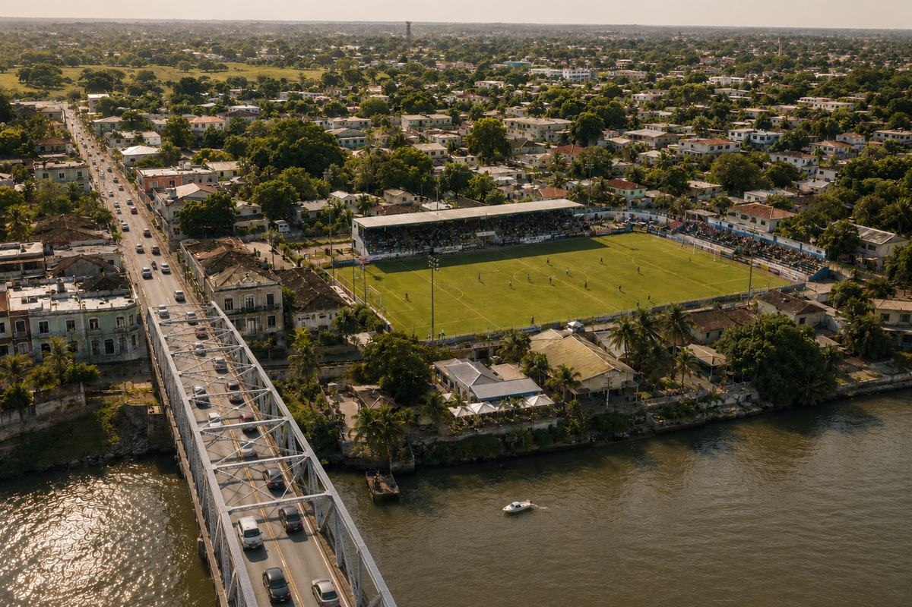

Swannbridge Town
Masherat: Denton · FA: Denton FA

Major honours
| Competition | Wins | Seasons |
|---|---|---|
| No recorded major honours | ||
League progress
Season-by-season record
Club records
| Record | Details |
|---|---|
| All-time record | Played 2050, Won 787, Drawn 381, Lost 882 |
| Record win in all competitions | Swannbridge Town 8–0 Rocastle United — 2022/23 Mainland First Division |
| Record home win in all competitions | Swannbridge Town 8–0 Rocastle United — 2022/23 Mainland First Division |
| Record away win in all competitions | Thorpe St Martin 0–7 Swannbridge Town — 1987/88 Mainland First Division |
| Record win in the league | Swannbridge Town 8–0 Rocastle United — 2022/23 Mainland First Division |
| Record home win in the league | Swannbridge Town 8–0 Rocastle United — 2022/23 Mainland First Division |
| Record away win in the league | Thorpe St Martin 0–7 Swannbridge Town — 1987/88 Mainland First Division |
| Record loss in all competitions | Princes Yeomouth 9–0 Swannbridge Town — 2000/01 Mainland League |
| Record home loss in all competitions | Swannbridge Town 0–8 Princes Yeomouth — 1981/82 Mainland League |
| Record away loss in all competitions | Princes Yeomouth 9–0 Swannbridge Town — 2000/01 Mainland League |
| Record loss in the league | Princes Yeomouth 9–0 Swannbridge Town — 2000/01 Mainland League |
| Record home loss in the league | Swannbridge Town 0–8 Princes Yeomouth — 1981/82 Mainland League |
| Record away loss in the league | Princes Yeomouth 9–0 Swannbridge Town — 2000/01 Mainland League |
| Highest scoring game | Swannbridge Town 4–7 Hardwick Rovers — 2013/14 Denton Cup First Round |
| Most consecutive league wins | 16 — 1991/92–1992/93 |
| Most consecutive league draws | 5 — 1974/75 |
| Most consecutive league defeats | 9 — 2011/12 |
| Most consecutive league games without defeat | 16 — 1991/92–1992/93 |
| Most consecutive league games without victory | 16 — 1986/87, 2015/16 |
| Most consecutive home league wins | 11 — 1972/73, 1991/92–1992/93 |
| Most consecutive home league defeats | 6 — 1976/77, 1986/87, 2012/13 |
| Most consecutive away league wins | 8 — 1991/92–1992/93 |
| Most consecutive away league defeats | 15 — 2016/17–2017/18 |
| Most consecutive home league games without defeat | 15 — 1984/85–1985/86 |
| Most consecutive home league games without victory | 9 — 1982/83, 1986/87, 2015/16, 2016/17 |
| Most consecutive away league games without defeat | 10 — 2021/22 |
| Most consecutive away league games without victory | 16 — 1986/87 |